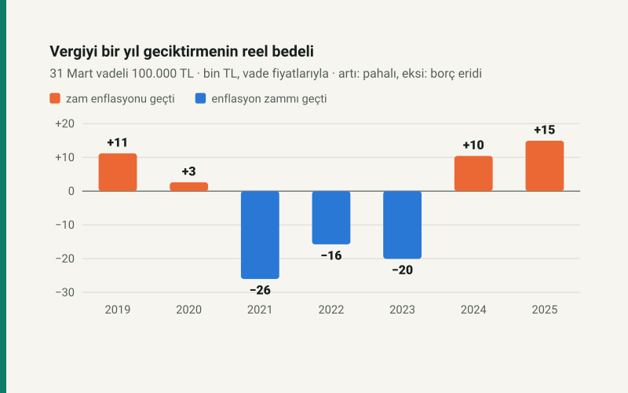

Kısa cevap
Gecikmenin gerçek bedeli, gecikme zammı oranıyla enflasyonun yarışına bağlı. 2019–2020'de ve 2024'ten beri zam enflasyonu geçiyor: geciktirmek reel olarak pahalı. 2021, 2022 ve 2023 vadelerinde oran enflasyonun çok altında kaldı; ödemeyi bir yıl geciktiren borcunu reel olarak küçülttü.
Bu bir tavsiye değil. Vadesi geçen vergi haciz ve teminat gibi yaptırımlara açıktır; bu yazı yalnızca parasal bedeli ölçer.
Yedi vade, aynı borç
Her yıl 31 Mart vadeli 100.000 TL vergi, tam bir yıl sonra ödenmiş olsun. Gecikme zammı GİB'in oran tablosuyla, oran değiştikçe dönem dönem hesaplandı. Reel bedel, ödenen toplamın vade tarihindeki fiyatlarla değerinden borcun düşülmesidir: artı, geciktirmenin enflasyonun üstünde bir bedeli olduğunu; eksi, borcun reel olarak eridiğini gösterir.
| Vade | Gecikme zammı | Dönemin enflasyonu | Reel bedel |
|---|---|---|---|
| 31.03.2019 | 24.356,67 TL | %11,85 | +11.181,22 TL |
| 31.03.2020 | 19.200,00 TL | %16,17 | +2.605,78 TL |
| 31.03.2021 | 19.200,00 TL | %61,12 | −26.018,72 TL |
| 31.03.2022 | 26.783,33 TL | %50,51 | −15.765,41 TL |
| 31.03.2023 | 34.683,33 TL | %68,49 | −20.062,86 TL |
| 31.03.2024 | 52.483,33 TL | %38,10 | +10.417,06 TL |
| 31.03.2025 | 50.443,33 TL | %30,88 | +14.951,32 TL |
Neden 2021–2023'te tersine döndü?
Gecikme zammı 30 Aralık 2019'dan 21 Temmuz 2022'ye kadar aylık %1,6'da kaldı: yılda basit %19,2. Aynı dönemde yıllık enflasyon %60'ların üstüne çıktı. Oran önce %2,5'e (Temmuz 2022), sonra %3,5'e (Kasım 2023) ve %4,5'e (Mayıs 2024) yükseldi; enflasyon düşerken oran yukarı gitti ve makas kapandı, sonra ters döndü. 13 Kasım 2025'ten beri oran aylık %3,7.
Bugünkü oranla
Aylık %3,7 yılda basit %44,4 eder. Ağustos 2026'da yıllık enflasyon %31,5'ti. Enflasyondan arındırınca bu, geciktirilen her 100.000 TL için yılda yaklaşık 9.800 TL reel bedel demek. Parayı geciktirip mevduatta tutmak da kurtarmaz: yıllık %37 brüt faizli bir yıllık mevduatın stopaj sonrası getirisi %31,45, gecikme zammının çok altında.
Varsayımlar
- Borç tek seferde, vadeden tam bir yıl sonra ödeniyor; kısmi ödeme ve tecil yok.
- Enflasyon, vade ayından bir yıl sonraki aya aylık TÜFE değişimlerinin çarpımıdır.
- Vergi cezaları, haciz masrafları ve SGK prim borçları (5510 m.89) hesaba girmez.
Kendi borcunuz için: gecikme zammı hesaplama.
Kaynaklar
- 6183 sayılı Amme Alacaklarının Tahsil Usulü Hakkında Kanun m.51.
- GİB, Gecikme Zammı Oranları tablosu (6183 sayılı Kanunun 51. maddesi); 10556 sayılı Cumhurbaşkanı Kararı (13.11.2025).
- TÜİK Tüketici Fiyat Endeksi, aylık değişim (TCMB yayını).
Tablodaki bütün tutarlar sitenin açık kaynaklı gecikme zammı ve TÜFE modüllerinden üretilir ve otomatik testle yeniden hesaplanır.
Sık sorulan sorular
Vergi borcunu geç ödemek mantıklı mı?
Bugünkü oranla hayır: gecikme zammı aylık %3,7, yılda basit %44,4; enflasyonun ve mevduat getirisinin üstünde.
Gecikme zammı yıllık yüzde kaç?
13 Kasım 2025'ten beri aylık %3,7; yılda basit %44,4. Zam anaparaya eklenmez, bileşik işlemez.
2021'de vergiyi geç ödeyen neden kazandı?
Oran aylık %1,6'da, yılda %19,2'de kalırken enflasyon %61 oldu. 100.000 TL'lik borç zam dahil 119.200 TL ödendi ama reel olarak 26.019 TL eridi.